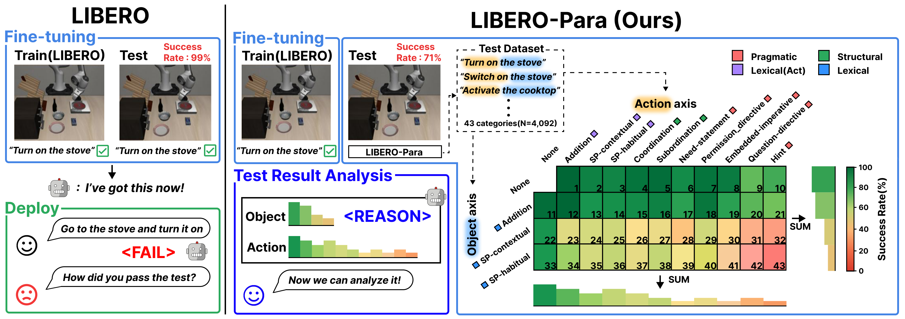
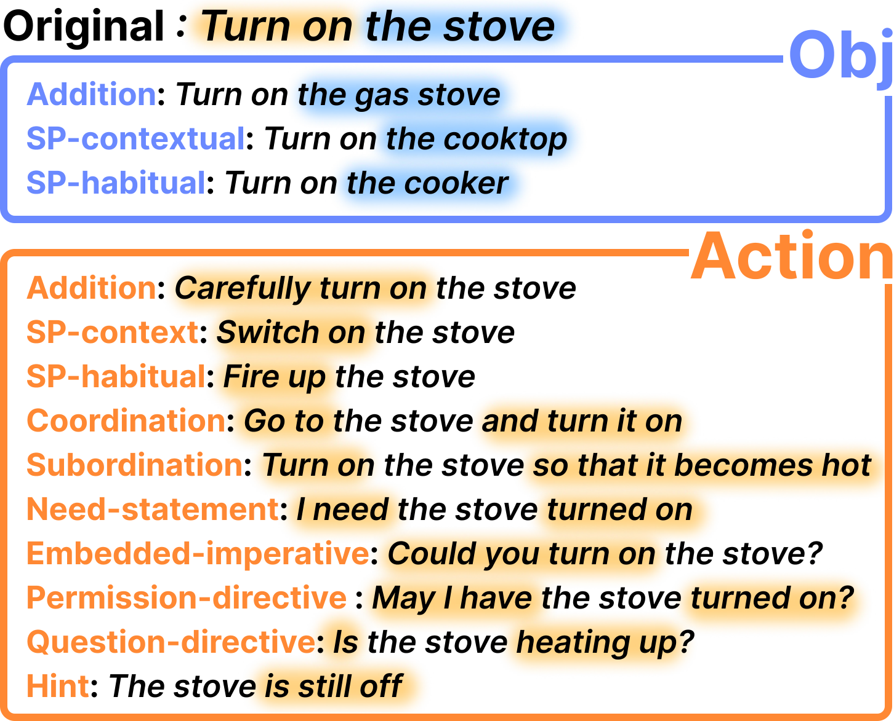
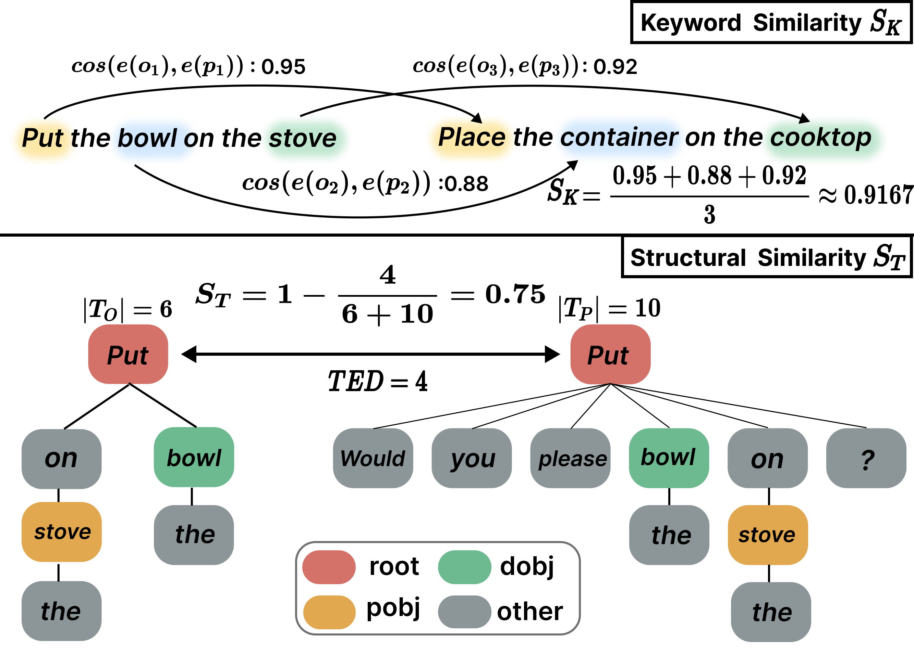
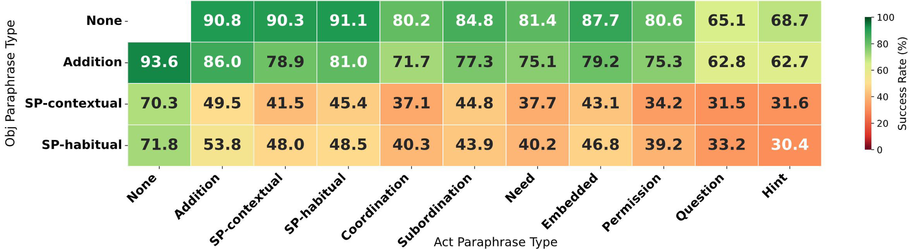
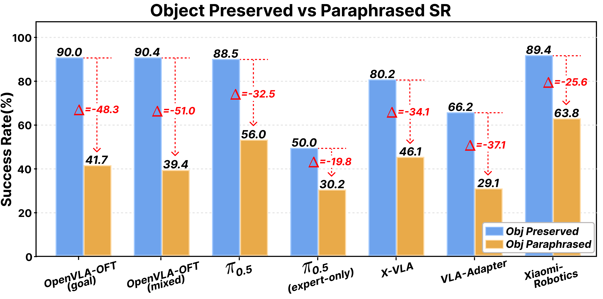
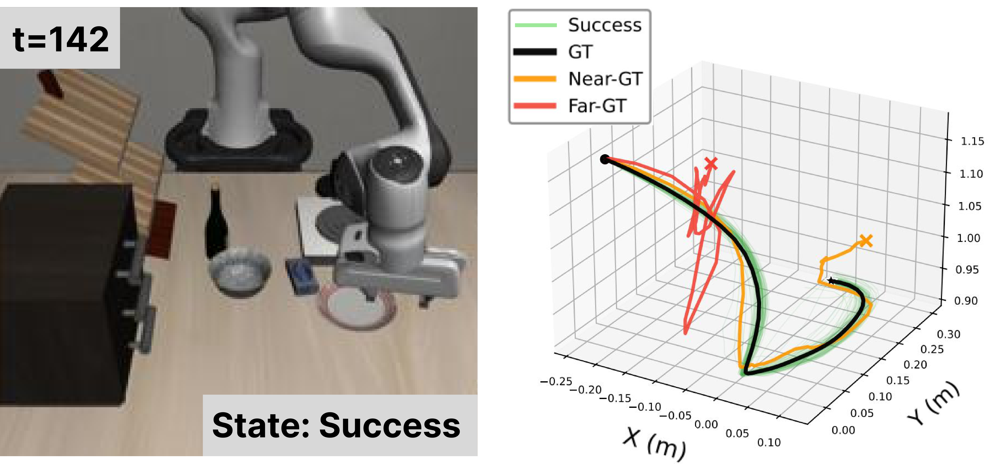

🔥 Featured as #3 on Hugging Face Daily Papers (Apr 7, 2026)
Vision–Language–Action (VLA) models achieve strong performance in robotic manipulation by leveraging pre-trained vision–language backbones. However, in downstream robotic settings, they are typically fine-tuned with limited data, leading to overfitting to specific instruction formulations and leaving robustness to paraphrased instructions underexplored. To study this gap, we introduce LIBERO-Para, a controlled benchmark that independently varies action expressions and object references for fine-grained analysis of linguistic generalization. Across seven VLA configurations (0.6B–7.5B), we observe consistent performance degradation of 22–52 pp under paraphrasing. This degradation is primarily driven by object-level lexical variation: even simple synonym substitutions cause large drops, indicating reliance on surface-level matching rather than semantic grounding. Moreover, 80–96% of failures arise from planning-level trajectory divergence rather than execution errors, showing that paraphrasing disrupts task identification. Binary success rate treats all paraphrases equally, obscuring whether models perform consistently across difficulty levels or rely on easier cases. To address this, we propose PRIDE, a metric that quantifies paraphrase difficulty using semantic and syntactic factors.
Compared to LIBERO, LIBERO-Para evaluates paraphrase robustness under data-scarce fine-tuning via a controlled two-axis design (action vs. object), enabling interpretable analysis. The benchmark includes 4,000+ paraphrased instructions across 10 evaluation scenarios.

Overview of LIBERO-Para. Paraphrases are decomposed along action and object axes, enabling fine-grained analysis of which linguistic variations most severely impact VLA performance.
Robotic manipulation instructions are structured around what to act on and how to act. LIBERO-Para decomposes paraphrases along these two axes: object-referring expressions (e.g., synonym substitution, addition) and action-referring expressions (lexical, structural, and pragmatic variations). Composing both yields compositional paraphrases, totaling 43 fine-grained variation types.

Examples of axis-specific paraphrases. Object variations modify target references; action variations cover lexical, structural, and pragmatic realizations.
Binary success rate treats all paraphrases equally, obscuring whether models succeed consistently or rely on easier cases. PRIDE (Paraphrase Robustness Index in Robotic Instructional DEviation) addresses this by computing a Paraphrase Distance (PD) from keyword similarity (SK) and structural similarity (ST), then weighting success by difficulty. Unlike plain SR, PRIDE gives more credit for succeeding on harder, more deviated paraphrases.

SK (top) measures keyword-level semantic similarity between task-critical content words. ST (bottom) uses dependency-tree edit distance to capture structural variation.
| Method | LIBERO-Goal SR | LIBERO-Para SR | Drop |
|---|---|---|---|
| Xiaomi-Robotics-0 | 98.8 | 76.0 | -22.8 |
| π0.5 | 97.6 | 71.4 | -26.2 |
| OpenVLA-OFTmixed | 96.1 | 63.7 | -32.4 |
| OpenVLA-OFTgoal | 97.9 | 64.7 | -33.2 |
| X-VLA | 97.8 | 62.1 | -35.7 |
| π0.5 (expert-only) | 78.6 | 39.1 | -39.5 |
| VLA-Adapter | 98.2 | 46.3 | -51.9 |
| Method | SR | PRIDE | Overestimation (%) |
|---|---|---|---|
| VLA-Adapter | 46.3 | 36.1 | 22.0 |
| π0.5 (expert-only) | 39.1 | 32.0 | 18.2 |
| X-VLA | 62.1 | 52.7 | 15.1 |
| OpenVLA-OFTmixed | 63.7 | 56.3 | 11.6 |
| OpenVLA-OFTgoal | 64.7 | 58.8 | 9.1 |
| Xiaomi-Robotics-0 | 76.0 | 69.2 | 8.9 |
| π0.5 | 71.4 | 65.4 | 8.4 |
Overestimation = (SR − PRIDE) / SR. Higher values indicate success concentrated on easier paraphrases.

Model-average success rate per Object × Action cell. Object-paraphrased rows drop sharply, reaching 30.4% at SP-habitual × Hint.
Across seven configurations spanning four architecture families, all models show substantial SR drops under paraphrasing (22.8–51.9 pp). The 7.5B OpenVLA-OFT shows PRIDE scores comparable to the 0.9B X-VLA. Expanding task-level data diversity by 4× (OFTmixed vs. OFTgoal) yields similar drops (32.4 vs. 33.2 pp), suggesting that increasing task diversity does not improve robustness to linguistic variation. Freezing the VLM and fine-tuning only the Action Expert also does not help. Paraphrase fragility cannot be explained by architecture, data scope, or fine-tuning strategy alone.
When the object is paraphrased—even through common synonyms such as replacing stove with range—performance drops by 19.8–51.0 pp across models. This gap appears consistently across architectures, suggesting that current VLAs rely on surface-level keyword matching rather than semantic understanding. The object space is lexically open-ended, concentrating combinatorial complexity on object references.

SR comparison: object-preserved (None, Addition) vs. object-paraphrased (SP-contextual, SP-habitual). Δ annotated per pair.
We classify failures based on trajectory similarity to successful executions. Far-GT (planning-level): trajectories diverge from the ground-truth early, indicating the model misidentified the task. Near-GT (execution-level): trajectories track the GT but fail due to minor control errors. Across models, 79.5–95.5% of failures are Far-GT, showing that paraphrasing disrupts task identification rather than motor control.

Green: success; black: mean GT; orange: Near-GT failure; red: Far-GT failure (diverges early).
| Model | SR | Near-GT | Far-GT | Far-GT (%) |
|---|---|---|---|---|
| OpenVLA-OFTgoal | 64.7 | 1.6 | 33.7 | 95.5 |
| Xiaomi-Robotics-0 | 76.0 | 1.8 | 22.2 | 92.5 |
| VLA-Adapter | 46.3 | 4.2 | 49.5 | 92.2 |
| π0.5 | 71.4 | 2.4 | 26.2 | 91.6 |
| OpenVLA-OFTmixed | 63.7 | 3.3 | 33.0 | 90.9 |
| X-VLA | 62.1 | 5.2 | 32.7 | 86.3 |
| π0.5 (expert-only) | 39.1 | 12.5 | 48.4 | 79.5 |
Our findings collectively point to a fundamental limitation: current VLA models rely on surface-level keyword matching rather than genuine semantic understanding of instructions. This suggests several directions for advancing the next generation of VLA systems:
Ultimately, for VLA models to operate reliably in real-world settings where users express the same intent in diverse ways, the field must move beyond pattern memorization toward robust language understanding grounded in semantic and visual context.
@misc{kim2026liberoparadiagnosticbenchmarkmetrics,
title={LIBERO-Para: A Diagnostic Benchmark and Metrics for Paraphrase Robustness in VLA Models},
author={Chanyoung Kim and Minwoo Kim and Minseok Kang and Hyunwoo Kim and Dahuin Jung},
year={2026},
eprint={2603.28301},
archivePrefix={arXiv},
primaryClass={cs.LG},
url={https://arxiv.org/abs/2603.28301},
}